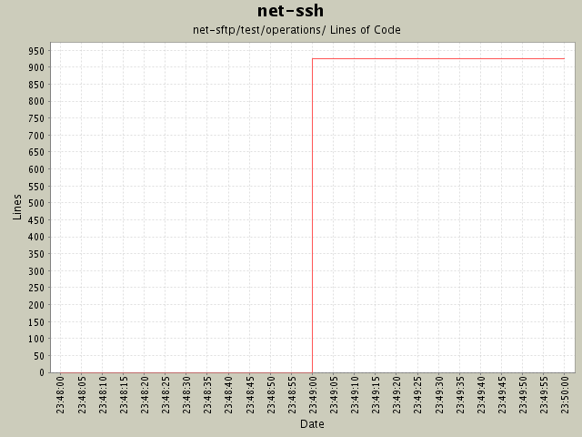

Module net-sftp/test/operations/
back to main page
Summary Period:
2004-12-01 to
2004-12-01
Modules
[root]/net-sftp/test/operations
Lines of Code

Total Lines Of Code:
926 (2005-01-07 15:12)
Authors
| Author |
Changes |
Lines of Code |
Lines per Change |
| minam |
16 (100.0%) |
926 (100.0%) |
57.8 |
Most Recent Commits
-
minam
2004-12-01 23:49
-
926 lines of code changed in:
-
net-sftp/test/operations:
tc_abstract.rb (new 124),
tc_close.rb (new 40),
tc_fsetstat.rb (new 48),
tc_fstat.rb (new 40),
tc_lstat.rb (new 40),
tc_mkdir.rb (new 48),
tc_open.rb (new 42),
tc_opendir.rb (new 40),
tc_read.rb (new 103),
tc_readdir.rb (new 88),
tc_realpath.rb (new 54),
tc_remove.rb (new 40),
tc_rmdir.rb (new 40),
tc_setstat.rb (new 48),
tc_stat.rb (new 40),
tc_write.rb (new 91)